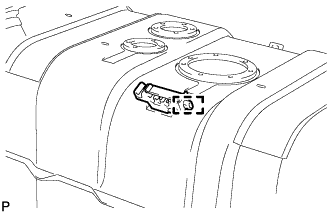

ТОПЛИВНЫЙ БАК (для 3-дверных моделей) > СНЯТИЕ |
| 1. СБРОСЬТЕ ДАВЛЕНИЕ В ТОПЛИВНОЙ СИСТЕМЕ |
Сбросьте давление в топливной системе (Нажмите здесь).
| 2. ОТСОЕДИНИТЕ ПРОВОД ОТ ОТРИЦАТЕЛЬНОГО ВЫВОДА АККУМУЛЯТОРНОЙ БАТАРЕИ |
| 3. СНИМИТЕ ОПОРНУЮ ПЛАСТИНУ КОВРИКА ЗАДНЕГО ПОЛА |
 |
Выверните 5 винтов.
Освободите 6 захватов и снимите заднюю опорную пластину коврика заднего пола.
| 4. СНИМИТЕ КРЫШКУ ТЕХНОЛОГИЧЕСКОГО ОТВЕРСТИЯ ЗАДНЕГО ПОЛА |
 |
Выверните 3 винта и снимите крышку технологического отверстия заднего пола.
Отсоедините разъем датчика уровня топлива и разъем топливного насоса.
| 5. СНИМИТЕ ЗАЩИТУ ТОПЛИВНОГО БАКА № 1 В СБОРЕ |
Выверните 5 болтов и снимите защиту топливного бака № 1.
| 6. СЛЕЙТЕ ТОПЛИВО |
Снимите пробку сливного отверстия топливного бака и прокладку и слейте топливо.
Установите новую прокладку и пробку сливного отверстия топливного бака.
| 7. ОТСОЕДИНИТЕ ГЛАВНЫЙ ТОПЛИВНЫЙ ПАТРУБОК |
 |
Отсоедините подающий топливопровод (Нажмите здесь).
| 8. ОТСОЕДИНИТЕ ТОПЛИВНЫЙ ШЛАНГ |
Отсоедините шланг отвода паров топлива и топливный шланг.
| 9. ОТСОЕДИНИТЕ ШЛАНГ, СОЕДИНЯЮЩИЙ ТОПЛИВНЫЙ БАК И НАЛИВНУЮ ТРУБУ |
Отсоедините шланг, соединяющий топливный бак и наливную трубу, от наливной трубы топливного бака.
| 10. ОТСОЕДИНИТЕ ШЛАНГ САПУНА ТОПЛИВНОГО БАКА |
Отсоедините шланг сапуна топливного бака от наливной трубы.
| 11. СНИМИТЕ ТОПЛИВНЫЙ БАК В СБОРЕ |
Установите под топливным баком телескопический гидравлический домкрат.
Выверните 2 болта, снимите 2 фиксатора, 2 штифта и отсоедините 2 хомута крепления топливного бака.
Снимите топливный бак.
| 12. СНИМИТЕ ТОПЛИВОЗАБОРНИК В СБОРЕ |
Выверните 7 винтов, освободите 2 зажима и снимите топливозаборник.
Снимите прокладку с топливозаборника.
| 13. СНИМИТЕ ТРУБКУ № 1, ОТВОДЯЩУЮ ПАРЫ ТОПЛИВА, В СБОРЕ |
Выверните 4 винта, отсоедините зажим и снимите трубку № 1, отводящую пары топлива.
Снимите прокладку с трубки № 1, отводящей пары топлива.
| 14. СНИМИТЕ КЛАПАН ОТСЕЧКИ ТОПЛИВА В СБОРЕ |
Снимите клапан отсечки топлива с топливного бака.
| 15. СНИМИТЕ ДАТЧИК УРОВНЯ ТОПЛИВА В СБОРЕ |
Выверните 5 винтов и снимите датчик уровня топлива.
Снимите прокладку с датчика уровня топлива.
| 16. СНИМИТЕ ШЛАНГ, СОЕДИНЯЮЩИЙ ТОПЛИВНЫЙ БАК И НАЛИВНУЮ ТРУБКУ |
Снимите шланг, соединяющий топливный бак и наливную трубу, с топливного бака.
| 17. СНИМИТЕ ШЛАНГ САПУНА ТОПЛИВНОГО БАКА |
Снимите шланг сапуна топливного бака с топливного бака.
| 18. СНИМИТЕ НИЖНЮЮ НАЛИВНУЮ ТРУБУ ТОПЛИВНОГО БАКА В СБОРЕ |
Выверните 8 винтов и снимите нижнюю наливную трубу топливного бака.
Снимите прокладку с нижней наливной трубы топливного бака.
| 19. СНИМИТЕ УПЛОТНИТЕЛЬНУЮ ВТУЛКУ ТОПЛИВОПРОВОДА |
|  |
Освободите зажим и снимите уплотнительную втулку топливопровода.
| 20. СНИМИТЕ АМОРТИЗАТОР № 1 ТОПЛИВНОГО БАКА |
Снимите 2 амортизатора топливного бака № 1 с топливного бака.